Muebles de aquí, hechos con oficio Loyra en Bilbao
Fundada en 1996 como evolución de una pequeña empresa familiar con tradición en la fabricación de mobiliario para el hogar, Loyra combina técnicas artesanales con tecnología avanzada y fabrica íntegramente en España.
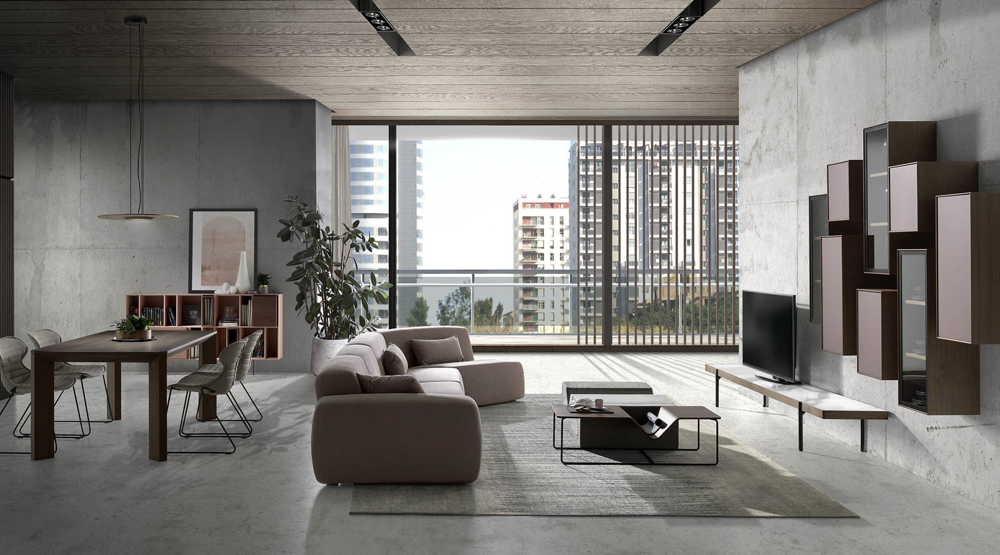
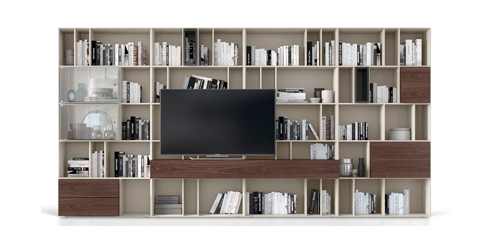
Roble y nogal, al detalle
En su carta de materiales, Loyra ofrece cuatro acabados de madera: tres robles y un nogal. Pasa el ratón por cada carta para darle la vuelta.
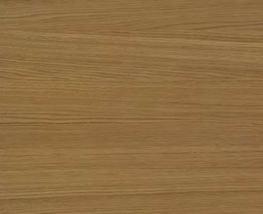
El tono más claro de la serie de robles de la carta de maderas de Loyra.
Roble · 650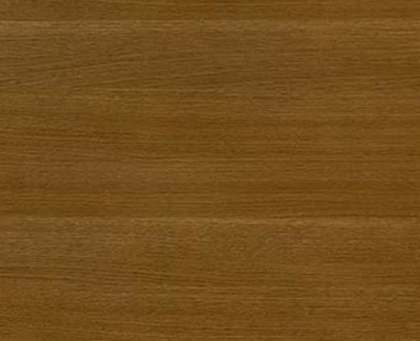
Un roble de tono cálido, más profundo que el nature.
Roble · 651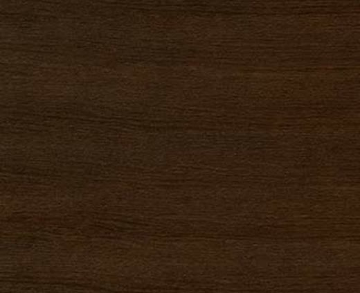
Roble oscuro de aire café, que conserva la veta a la vista.
Roble · 652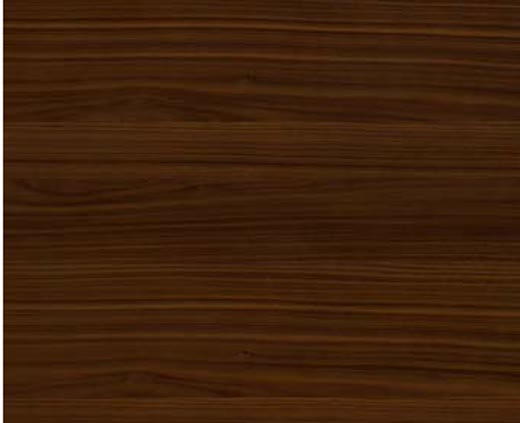
El nogal de la carta: marrón intenso, para composiciones con carácter.
Nogal · 420Además de maderas, la carta de materiales de Loyra incluye lacas, sintéticos, metal, porcelánicos MDi, HPL, cristales, polipropileno y telas. Para el cuidado, la marca recomienda un paño húmedo con agua tibia y un 20 % de amoniaco, sin productos con silicona.
Del salón a la mesa
Librerías y contenedores, mesas, sillas y mesas auxiliares: las cuatro familias del catálogo de Loyra, en ambientes y por piezas.
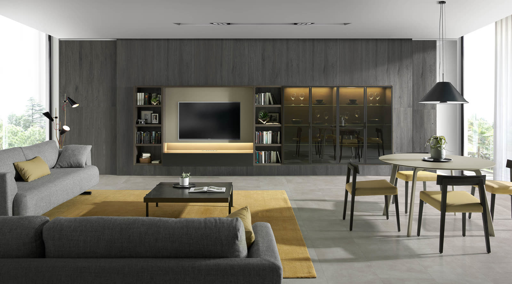
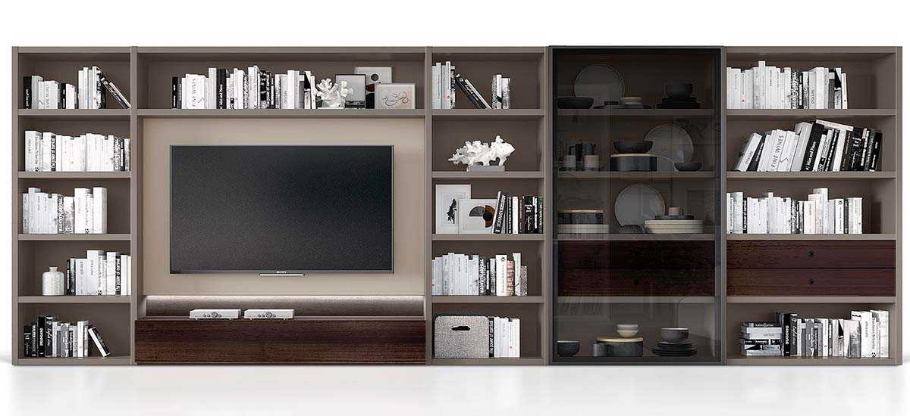
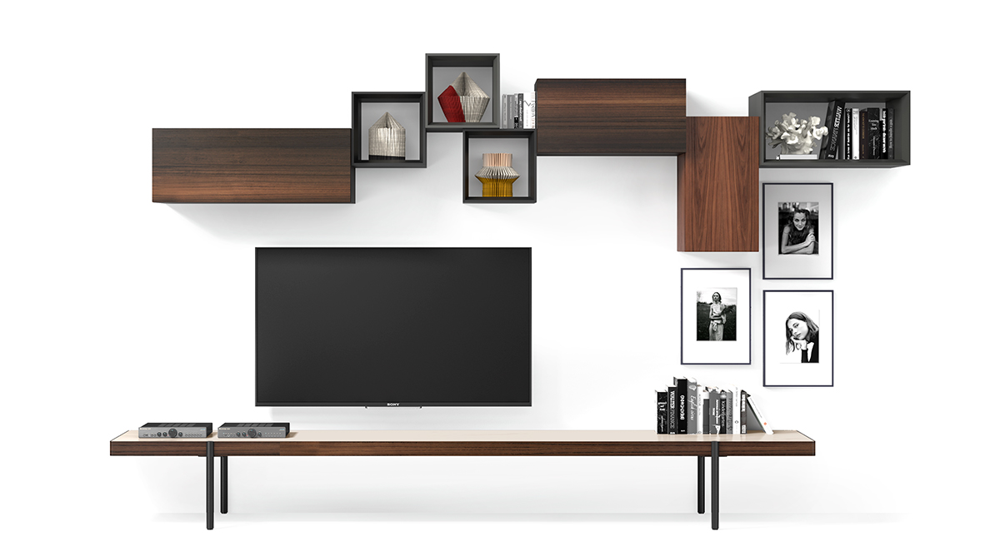
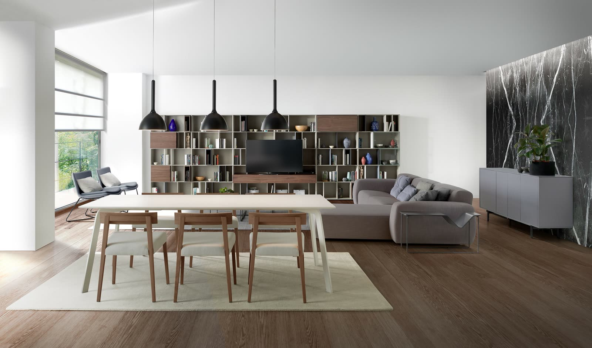
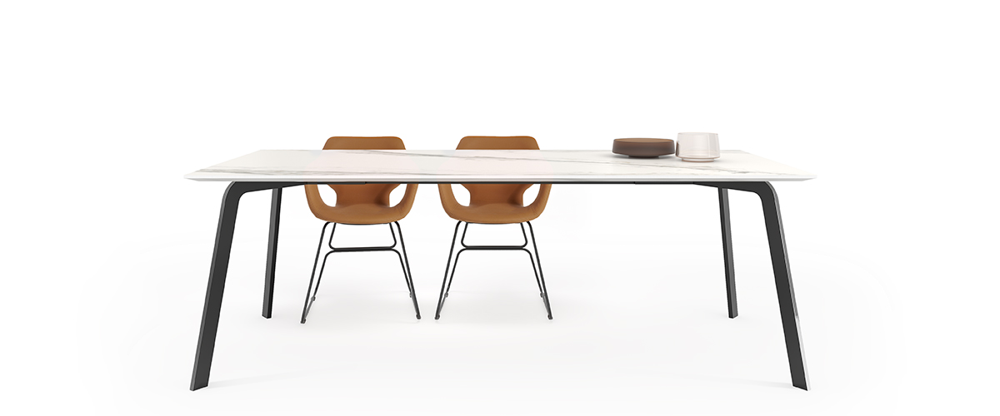
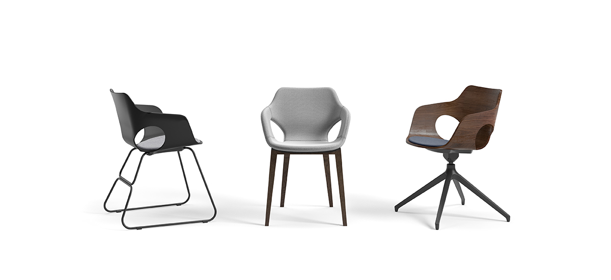
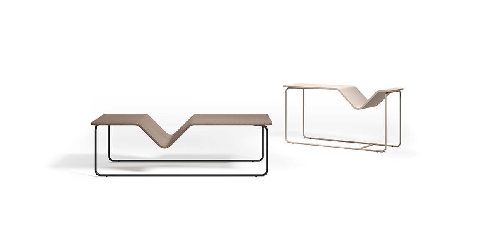
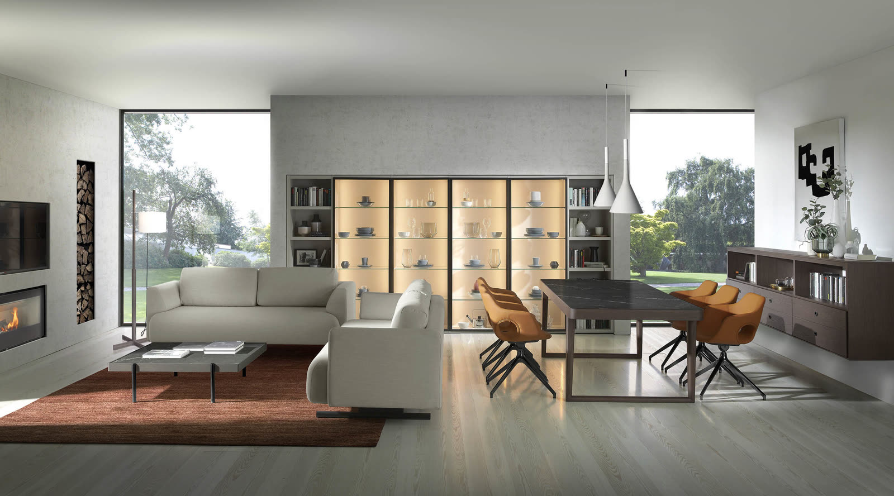
Oficio y técnica, bajo el mismo techo
Loyra es una empresa valenciana ubicada en Alcàsser, en el cinturón industrial de València y cerca de su puerto comercial. En sus instalaciones combina técnicas artesanales con la más avanzada tecnología y un equipo humano altamente cualificado.
Según la marca, sus productos se fabrican íntegramente en España, con selección de materias primas, herrajes de prestigio, acabados de alta gama y un exigente control de calidad.
«Elegancia atemporal y excelencia técnica.»Valores de Loyra
Ven a ver Loyra con tu cliente
Te ayudamos a elegir composiciones, maderas y acabados, y te acompañamos en el proyecto desde el showroom de Bilbao.